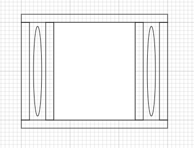

The design for your kart can vary quite a lot, but there a few general designs that are the most stable. Typically, you will want to have 4 wheels for your cart. You can opt to use 3 wheels (2 wheels on the back, 1 steering wheel on the front), though this configuration can result in there being too much pressure on the front wheel because it has to hold the weight of you, and the wood. While it's also possible to have 6 wheels, those karts are often relatively hard to turn and more flimsy, as they're less compact.
You can find some information about 3-wheel go-karts here
There are a couple of designs for the back wheels. One of the most common ones is as follows:
This design is probably the most elegant and simple: you have the two wheels bolted into each side of the axle, and then on top of the axle, you have some sort of floor or seat where you would sit. In the above diagram I showed, I used two bars, as they are thick and sturdy.
Another, more sturdy, design for the back part of your go-kart is as follows:
This design is stronger because the wheel fits more tightly into the frame. While the other design has just one mount of the wheel onto the rest of the kart, this design has two places where the wheel connects to the rest of the kart. Also, the places where the wheel mounts on to the axle are now in the center of the rod, which is a lot stronger. It's a lot easier for the wheel to detach on the first design, while it's practically impossible for the wheel to detach on the second design. However, if done well, karts that use the first design even faster and more compact than karts that use the second design.
The next thing you'll want to consider is the front wheels. The front wheels are like the back wheels, except they don't need to support as much weight. Your front wheels will also be your steering wheels, so you'll need some way to turn them, either with your hands or your feet. Because the front wheels have less pressure on them, you can get away with using smaller wheels for the front wheels, including from tricycles or other kid's bicycles.
You can look for some cheap wheels that are approximately the right size here
There are also two main designs for the front wheels. The first design is somewhat similar to the first design for the back wheels, it is as follows:
This design has both wheels mounted on to the side of the axle (with a bolt), without any outside protection to prevent the wheels from going off. However, because of the lack of pressure on the front wheels, this is often enough. Because the front wheels need to be connected to the body of the kart, but also need to turn independently, you'll need to conenct the axle to the rest of the kart with a bolt and some washers. I showed this on the above diagram, where the the bar at the top connects to the rest of the kart, and connects to the front axle via a bolt.
Another design for your front wheels is as follows:
Note: I accidentally drew the right wheel as wider than the left wheel, but they should be the same size
This design is sturdier than the other design for the front wheels, for the same reasons as the back wheels. While this design is significantly sturdier and there's no chance of the wheels falling off, this design is a lot bulkier, and if you're going to use foot steering for the front wheels, you might want to use the smaller but slicker design, as that's easier to use for foot steering. Aesthetically, I like this design a bit less, because I like the simplicity of just having an axle attached to the front wheels. However, there's advantages to both front wheel designs.
Because the front wheels are smaller, stroller wheels will often do
To connect the front and back axles so that your car is connected, you don't have to do anything particularly fancy, you just have to have some sort of bar that is drilled in to connected to both the front and the back. Unless the bar is really strong, you'll probably want to have a couple of bars that connect the front and the back, both because it's sturdier, and because it allow you to put a board on top of the boards to make a floor for the car. You can make the distance between the front and the back of the car as long or short as you want, so long as the car isn't so long that it's flimsy.
You can look for 2x4s here
On a go-kart like this, you'll probably want to use one of two designs for your steering system, foot steering or hand steering.
In foot steering, you place your feet on the axle for the front wheels, and use your feet to turn the front wheels of the kart, and thus the whole of the kart. Often, you can put small wooden triangles on the front axle to help your feet lock into the front axle. In hand steering, you use some sort of mechanism that allows your hands to remotely control the front wheels. Probably the simplest way of accomplishing this is putting bars extending out of the front axle towards your hands. You can then use these bars to push the axle in either direction and turn the kart. You can also do hand steering by hooking up a bar or wheel directly above the front axle, which you can then use like a steering wheel. This method is a lot more glamorous, and looks really cool, though it can inconvenient to have to lean forward as a driver, as both the other methods allows you to lean back while you drive.
Here is an informational video
Pretty much all go-karts have brakes that work by applying friction to the back wheel until it stops moving. One way of doing this is to put a hinge in front of the back wheels and attach a bar to each hinge, so that you can pull the bar back and forth and the bar touches the wheel when it's down. This allows you to apply friction in a controlled way to your wheels, where you can pull the bar down to slow down your kart, and pull the bar up to continue your speed. This is a simple and relatively effective way of making brakes. Another way of making brakes is called "lean-back brakes". This involves making a wooden board which you can lean back on, that will trigger your brakes. In order to do this, mount hinges to the ground behind where your seat is, and attach a board to the hinges. In order to prevent the board from constantly falling back, I would recommend attaching bicycle tubing from the top of the board to the somewhere near the front of the body of the kart. This will allows you to lean back on the board behind you to push it back, and have it bounce back when you're not leaning on it. Finally, attach some sort of bar to the back of the board so that when you lean on the board, the bar triggers the brakes. This is a really cool and very efficient way to make brakes that's a bit more complicated to set up, but is really accessible and is very effective. The third way to make brakes is to literally use a bicycle brake, and hook it up to your tire. While this is probably the most difficult method, if the bike brake is attached to the tire well, it can be an extremely efficient brake.
You can find bike tubing here
This is definitely the most fun and and subjective part of the kart-building process. You can essentially decorate your go-kart to be anything you want, so long as it doesn't break it. While you can just paint your kart, you can also, for example, stick four bars above the body of the kart, and place a board on top of those four bars to make a roof. There's pretty much infinite possibilities as to what you want to make your go-kart into. You can add an old radio inside to make the kart play music, you can add plexiglass windows to protect from the outside whilst still being able to see, you can add a small fan or a small heater, and much more.
If you like the radio idea, here is where you can buy some